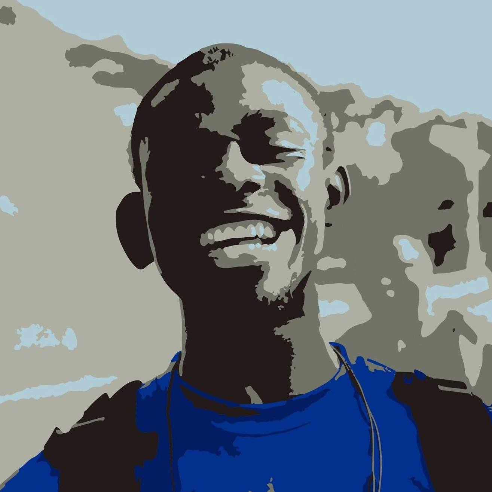
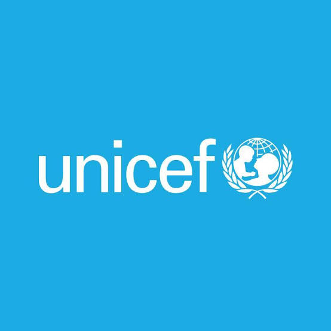
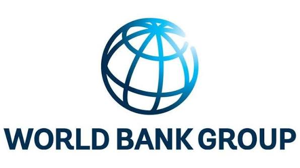
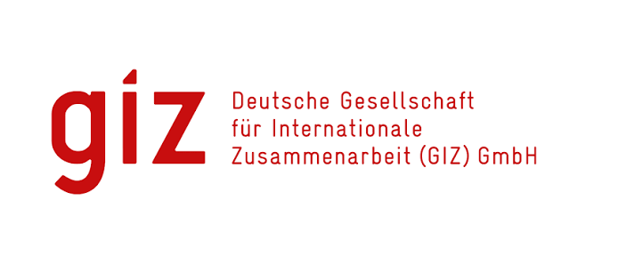
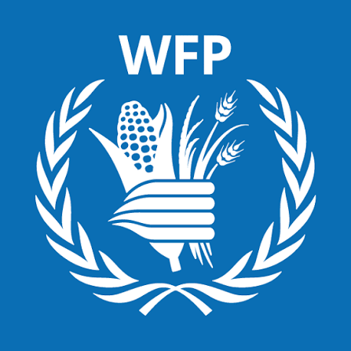
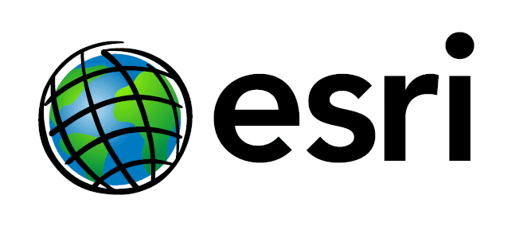
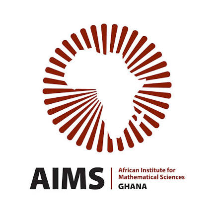
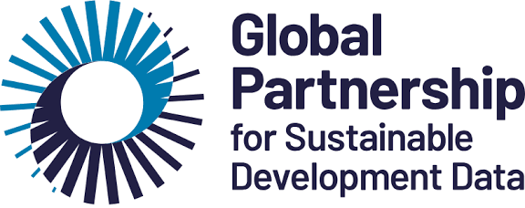
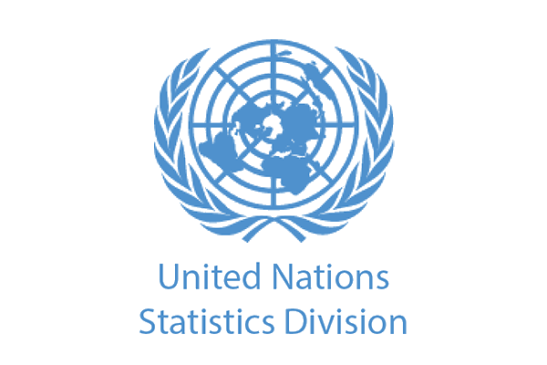
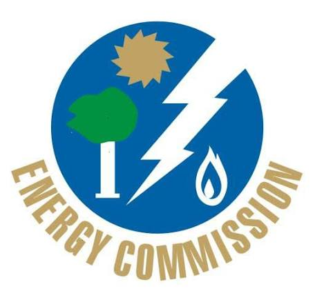

Hello, I'm
Selaseh Pashur Akaho
Geospatial Analyst & Data Scientist
Eight years turning spatial data into decisions — survey design, geospatial data management and real-time monitoring for national statistics and donor-funded projects with the World Bank, GIZ, WFP and UNICEF. I deliver actionable insight that informs policy and strengthens institutional capacity.



Accra, Ghana
Data Scientist · GSS
What I do
// spatial analysis · geo-intelligence · environmental monitoringSpatial Analysis & Mapping
Demarcation, digitising, web maps and proximity modelling — from census enumeration areas to national facility coverage.
See outputs →Data Science & Visualisation
Python, R and SQL pipelines; custom ggplot2 themes; gridded data platforms and dashboard design for national statistics.
See outputs →Training & Capacity Building
Built GIS and data-visualisation skills for 100+ staff and service personnel across the National Statistics System.
See trainings →Design & Media
Cartographic design, report layouts, graphics and video — Adobe design and video-editing suite in service of data stories.
See designs →Institutions worked with & engaged
Hover a logo to see topics of engagement. The strip flows — hovering pauses it.











Energy Commission

Work experience
// 2012 — present-
Nov 2023 — Present
Data Scientist
Ghana Statistical Service
Built a geo data-collection app for post-census mapping; lead on data-visualisation standardisation; created a custom ggplot2 theme; generated a spatial proximity index for essential facilities and informal settlements; coordinated a gridded data platform.
-
Jan 2022 — Feb 2024
Project Manager, Data for Good
Ghana Statistical Service · Flowminder
Liaised between Flowminder and GSS stakeholders, supported the SDG secretariat portfolio and coordinated capacity development for data-science trainees.
-
Jul 2021 — Jun 2023
Technical Project Coordinator, GIGA
UNICEF Ghana
Coordinated the mapping of 3,500 school locations across Ghana, identified key data sources and partnerships, and tracked team operations.
-
Sep 2017 — May 2021
GIS Analyst
Ghana Statistical Service
Processed the 2018 demarcation GPS data, built web maps and dashboards, developed spatial models for the 2021 Population & Housing Census and trained 100+ personnel in GIS workflows.
-
2016 — 2017
Project & Business Development Intern
Real Living Home, Accra · Green Turn Co., London
Real-estate marketing campaigns, content and zero-cost marketing research.
-
2012 — 2016
Project & International Relations Manager
AIESEC
Supervised 7 projects and a 100-person national operations team; facilitated at 10 conferences.
Recent projects
Urban Observatory — National Statistics System
Read summary →Good Governance Survey
Read summary →Ghana Living Standards Survey & IBES
Read summary →National Reporting Platform for SDGs in Ghana
Read summary →GIGA School Mapping — UNICEF Ghana
Read summary →
View the live map →
Skills & education
// tools of the tradeProgramming
Software & tools
Spoken languages
Education
M.Sc. Geo-Information Science
Dissertation: susceptibility mapping of indoor radon gas in workplaces and residential buildings, Ga East Municipal.
B.Sc. Earth Science
Dissertation: geological mapping of Osuwem and surrounding communities.
Fellowships
Data Science Fellowship Programme
Young African Leaders Initiative (YALI), Cohort 9
Let's make something with meaning.
Email selaseh@outlook.com or selasehakaho@gmail.com · Call / WhatsApp +233 054 773 5716